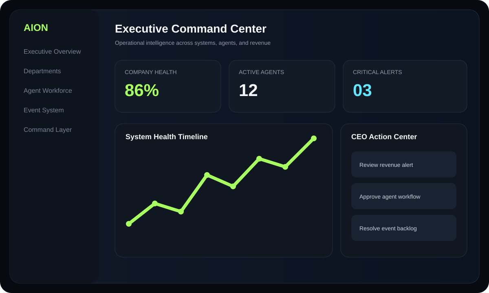

01 / AI OPERATIONS
AION Systems
An AI-operated business platform combining event capture, command routing, operational memory, executive dashboards, Supabase data, APIs, and cloud infrastructure.
- FastAPI + Supabase integration
- Event-driven architecture
- AWS and VPS deployment planning
PythonFastAPISupabaseAWS
View case study →